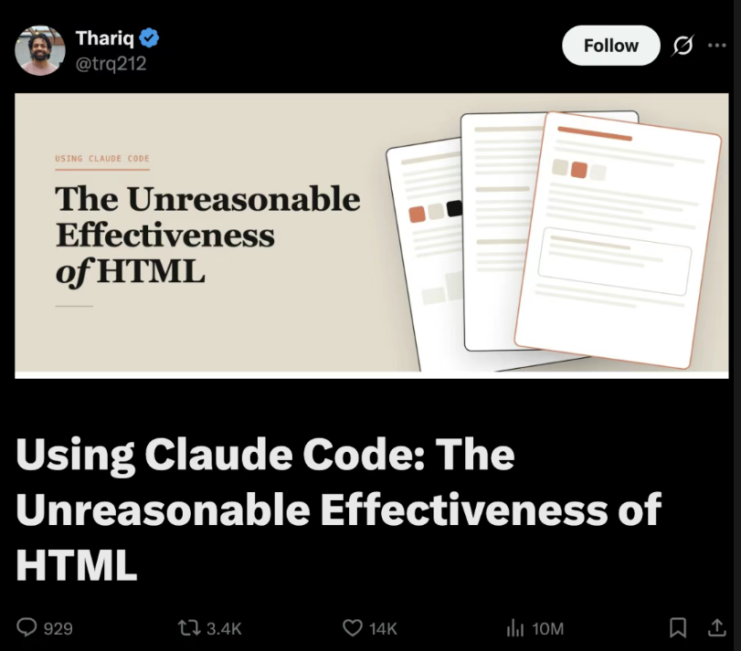

背景：Markdown 真的要凉了吗？
2026 年初，Anthropic 工程师 Thariq 发了一篇长文《Using Claude Code: The Unreasonable Effectiveness of HTML》，全网炸了——929 评论、3.4K 转发、14K 赞、1000 万阅读：

量子位翻成中文标题叫《Markdown 要凉…卡帕西也站 HTML 了》。核心论点：
我现在不管是做规划、需求设计、方案探索，还是代码审查和整理报告，全都在用 HTML。
文章列了五条 HTML > Markdown 的理由：信息密度、可读性、零成本分享、交互能力、快乐感。
但是 — Markdown 没死，只是退到了「源格式」
仔细看 Thariq 自己说的："我几乎不亲手编辑这些文件了，更多是拿它们当规范、参考文档或者头脑风暴的产出。"
也就是说，AI 写的还是 Markdown。人类要读的才是 HTML。
Markdown 仍然有 5 个 HTML 替代不了的功能：
| 功能 | 说明 |
|---|---|
| Git diff | 行级 diff 干净可读；HTML 的标签噪音让 PR review 几乎不可能 |
| 可移植 | 任何编辑器、任何系统、任何工具链都认 |
| 不污染 token | 喂给 LLM 时没有标签噪音，纯信息密度 |
| Source of truth | 一份源，能导出 HTML / PDF / DOCX / PPTX 全套 |
| Version control | 30 年的工具积累全部适用 |
所以 Markdown 的位置已经在变。未来 AI 系统的架构大概率是：
AI
↓
MD / JSON / AST ← 源格式（Git 层）
↓
HTML Component Tree ← 渲染层（人类阅读）
↓
人类阅读Markdown 会逐渐退化成：
- 导出格式 — 一份源可以导出多种成品
- 兼容层 — 跟旧工具链握手
- 纯文本 fallback — 没法渲染 HTML 时降级
- Git 层 — 版本控制、diff、review
而不是主交互层。 主交互层是 HTML（甚至按 Karpathy 的说法，终点可能是某种直接生成的交互视频）。
HTML 自己的短板，恰好需要 MD 来补
文章评论区有人问：HTML 这么好，那版本控制怎么办？HTML 的 diff 是出了名的"吵"——一改动几行内容，标签、样式、属性的变化淹没掉真正的差异，让 PR review 几乎不可能。Thariq 自己也承认：这是 HTML 最大的短板，没有完美解决方案。
但其实有——只是答案不在 HTML 这一侧。
让 MD 留在 Git 里。HTML 只在需要给人看的时候按需生成。
.md → Git 仓库（version control / diff / review / source of truth）
↓ mdrise（按需）
.html → 分享 / 阅读 / 邮件 / 打印（人类视觉成品）这是 mdrise 设计上最关键的一点：你不需要在 "Markdown vs HTML" 里选边，而是让它们各干各的事——
- MD 干 MD 擅长的：Git diff、可移植、不污染 token、source of truth、version control
- HTML 干 HTML 擅长的：信息密度、可读性、零成本分享、交互、阅读快乐
mdrise 就是这两者中间那个自动桥：AI 写 .md 提交进 Git；需要给人看的时候，一句"做成网页"就生成 .html。.html 是临时视觉成品——扔了再生，零成本。
这就是为什么"AI 时代是颠覆性的"——不是因为 Markdown 死了，而是因为它的角色从「人类的主要交互层」退回了「机器的源格式」。它仍然不可替代，只是位置变了。
这是什么
一个 Claude skill。装上之后，让 Claude 把任何 .md 转成单文件 HTML，具备：
- 文字一字不改 — 不 paraphrase、不"修正"、不省略。源里有什么，HTML 里就有什么。
- 视觉自动判断 — Claude 先识别内容媒介（文档 / 书页 / 落地页 / 笔记…），再 pick 字体、色板、版式。不是统一模板。
- 侧边浮动目录 — 自动从 H2 / H3 生成，永久可见的展开图标随滚动跟着走，scroll-spy 高亮当前章节。
- 17+ 种文字脚本支持 — 拉丁、中日韩、阿拉伯希伯来（RTL）、西里尔、印地、泰米尔、孟加拉、泰文、高棉、缅文、格鲁吉亚、亚美尼亚、埃塞俄比亚……每种都有字体推荐表，Noto 家族兜底。
- 反 AI slop 三条铁律 — 禁用 Inter / Roboto / Arial、禁用紫渐变白底 hero、禁止把书页美学塞给非文学内容。
- 单文件输出 — CSS 全内联，唯一外部资源是 Google Fonts CDN。一个
.html文件，邮件附件就能传。
不重复劳动：源没变就不重渲
mdrise 把 .md ↔ .html 当成一对镜像在维护，不是无脑触发。每次生成的 HTML 头部都会嵌入一段源文件的 SHA-256 指纹：
<meta name="mdrise-source-hash" content="sha256:9c01140d59119d59e0...">
<meta name="mdrise-generated-at" content="2026-05-12T09:08:27Z">下次你（或 Claude 自己）想"做成网页"的时候，skill 先读现有 HTML 的 hash，跟当前 MD 算一遍 hash 对比，按这张表决定：
| 状态 | 行为 |
|---|---|
.html 不存在 | 直接生成 |
.html 存在，但 hash 跟源不匹配（MD 改过了） | 直接重渲 — 典型场景：AI 刚改完 README |
.html 存在，hash 跟源一致（in sync） | 询问你 要不要重渲，不擅自动手 |
| 你说 "force / 重新生成" | 跳过检查直接重渲 |
这意味着 mdrise 可以被反复调用而不污染文件——每次对话只要提到 README，不会重复跑一遍 HTML 生成。这才是"自动维护 markdown→HTML 镜像"该有的样子。
为什么用 hash 不用文件 mtime：git clone 会把所有文件的 mtime 重置成 clone 时间，mtime 不可信。Hash 锚定的是源内容，跨 clone 跨设备都准。
实战示例（5个真实测试）
每个都跑了 with-skill 和 baseline（不装 skill 让 Claude 裸做）。点链接看实际渲染效果：
| 内容 | 语言 | 媒介 | with mdrise | baseline |
|---|---|---|---|---|
| Lumie 项目自检报告 | 中文 | 技术文档 | docs 风、玉青色、左侧 ToC | 紫粉 aurora 渐变 + 玻璃卡片（AI 默认） |
| 搬到新城市的第一年 | 中文 | 个人随笔 | 米纸 + 霞鹜文楷 + ❖ + 「目」字 toggle | 也能凑合，但没 ToC |
| Glimpse JSON 可视化 | 英文 | 产品落地页 | Linear 暗黑 + Geist + 电光绿 | dark + Inter + 通用卡片 |
| 鏡 Kagami SSG | 日文 | 技术 README | Vercel / Linear 暗黑 + Noto Sans JP | Noto Serif JP body + 印章风（书味跑偏） |
| 大马士革晨咖啡 | 阿拉伯文 | 文学随笔 | RTL + Amiri + Aref Ruqaa + 镜像 ToC + 变音符号验证 | RTL 对了，字体也对，但缺 ToC 和 Latin 隔离 |
安装
Claude Code CLI
/plugin marketplace add YukiOvOb/mdrise
/reload-plugins或者本地装：
claude --plugin-dir ./mdrise.skillClaude 桌面 / 网页
把 mdrise.skill 文件传到 claude.ai 的 skills 上传入口。
使用
直接跟 Claude 说人话：
> 把 README.md 做成网页
> render this article as html
> 美化这篇文章
> turn my notes into a webpage
> 做个项目主页
> 排版一下这个 markdown或者最自然的工作流：让 Claude 写完 plan.md / report.md 之后，跟一句"做成网页"。
工作目录里有 README.md 时，任何"做成网页 / 美化 / 做个主页"类的请求会自动选这个 skill——这是写在 description 里的硬规则。
设计哲学
两个不可变约束：
- 文字一字不差——所有 enhancement 都是视觉层的加法，从不替换或重述源文字。
- 视觉必须升维——目标是"分得出去"的水平，不是 default browser rendering。
核心方法论：先判断媒介，再挑美学。
- 文学 → 书页（米纸 + 衬线正文 + 古典分割符 + 窄栏）
- 技术 → 文档站（Stripe / Vercel / Anthropic docs 调性，干净屏幕原生）
- 产品 → 落地页（Linear / Resend 调性，现代设计感）
- 这条边界是核心——书页美学只给文学内容。技术 / 产品文档用了就是 category error。
多语言策略： 先识别脚本（CJK / 阿拉伯 / 西里尔 / 印地…），再挑字体覆盖（Noto 家族兜底），再判断方向（LTR / RTL）和布局。RTL 用逻辑 CSS（padding-inline-start 等）而不是 left / right。
完整设计原则见 SKILL.md。
贡献 & 反馈
欢迎 issue 和 PR。如果 mdrise 对你的某个特定内容类型不奏效，请：
- 发个 issue，贴上源
.md和你期望的视觉方向 - 我会用同样的 4 步迭代法（draft skill → run subagents → review → revise）把它修进去
致谢 / 打赏
mdrise 完全开源（MIT）。如果它帮你省下了排版的时间，或者你想支持我继续打磨它，欢迎请我喝杯咖啡：
- Buy Me a Coffee：https://buymeacoffee.com/midasovorh （国际）
- 微信 / 支付宝：
接受各种形式的支持：把 mdrise 转发给一个用 Claude 写 README 的朋友，给仓库点个 ⭐，或者用它做出来一份漂亮的 HTML 然后发给我看看——那就是最大的鼓励。
License
MIT。详见 LICENSE。